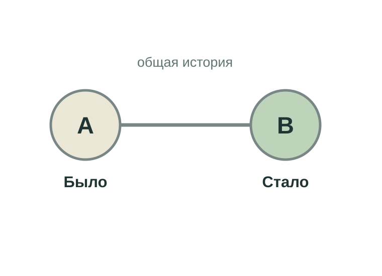
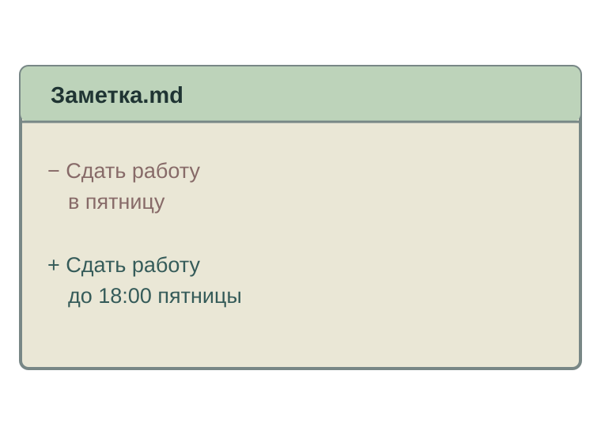
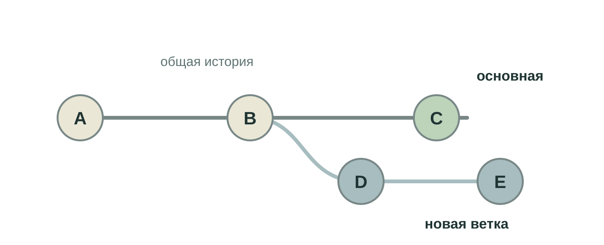
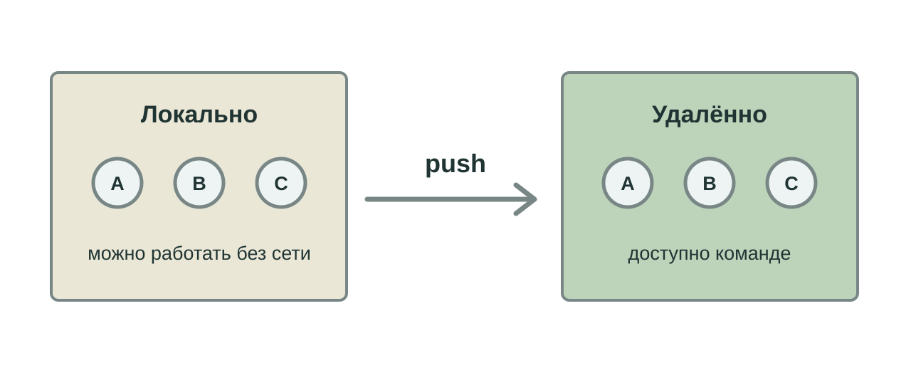

Какой файл последний?
«итог» · «итог_новый» · «итог_точно_последний»
Что изменилось между версиями — и зачем?
«итог» · «итог_новый» · «итог_точно_последний»
Что изменилось между версиями — и зачем?
Хочу сравнить прошлую и нынешнюю версию заметки.
Хочу понять, кто и зачем изменил общий проект.
Хочу увидеть его правки и дать ему контекст прежних решений.
| В истории проекта | Оставить локально |
|---|
|---|---|
| Исходники, тесты, README | Кеши и временные файлы |
|---|---|
| Правила сборки и пример настроек | Результаты сборки, которые легко повторить |
| Описание структуры данных | Рабочую базу с реальными данными |
.gitignore помогает исключить ненужные файлы до их добавления.

Файлы изменились.
Мы выбрали, что сохранить.
Коммит зафиксировал состояние и объяснение.

Что изменено?
Что именно?
Что войдёт в историю?
Сначала смотрим разницу. Потом сохраняем шаг.

После общего коммита работа может пойти в двух направлениях.

Участники могут работать со своей историей без общего сервера.
Ветка → push → просмотр разницы → обсуждение → решение
Отправить работу ≠ принять её в общую ветку.
Агент читает прежние коммиты, чтобы понять проект.
Агент или человек меняет файлы.
Мы смотрим разницу и проверяем результат.
История видна. Решение о приёмке остаётся за человеком.